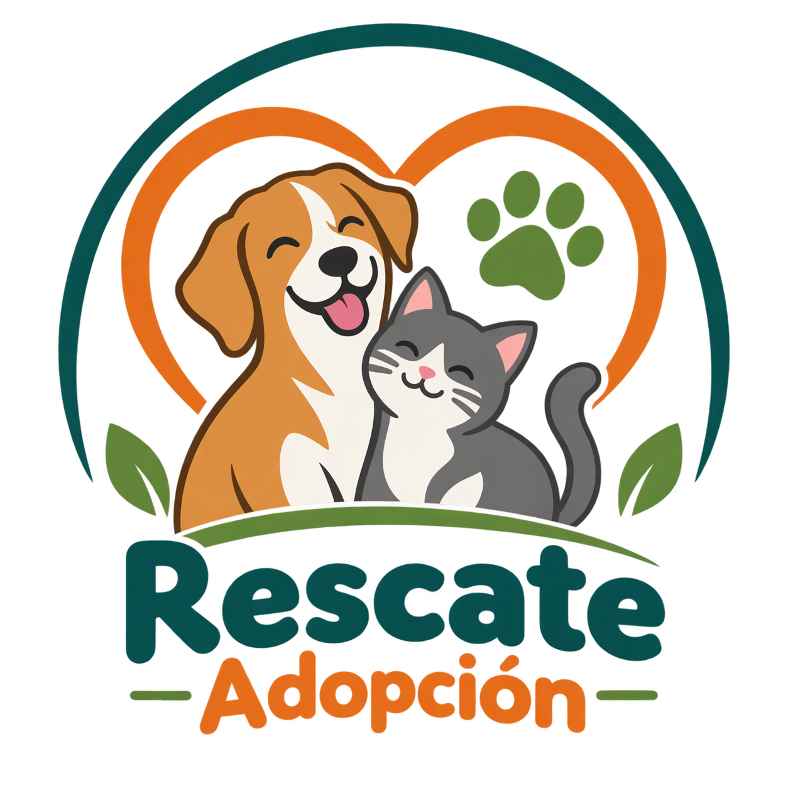

Casos en evaluación
Existen reportes que requieren una revisión inicial para determinar el tipo de asistencia que necesita cada animal.
Consultar los casos registrados
Plataforma comunitaria para registrar rescates, organizar casos y promover adopciones responsables.
Este espacio permite organizar la información de animales encontrados en situación de abandono, riesgo o necesidad de atención.
Las personas pueden registrar un nuevo caso y consultar el estado de los rescates atendidos por la comunidad.
Existen reportes que requieren una revisión inicial para determinar el tipo de asistencia que necesita cada animal.
Consultar los casos registradosLos casos con urgencia médica alta deben ser identificados para facilitar una respuesta oportuna.
Registrar un caso urgenteLos animales que concluyen su recuperación pueden iniciar un proceso de adopción con seguimiento y compromiso familiar.
Utiliza el formulario para comunicar la ubicación y el estado de un animal que necesita ayuda.
Consulta el listado organizado de animales registrados y conoce el estado actual de cada caso.